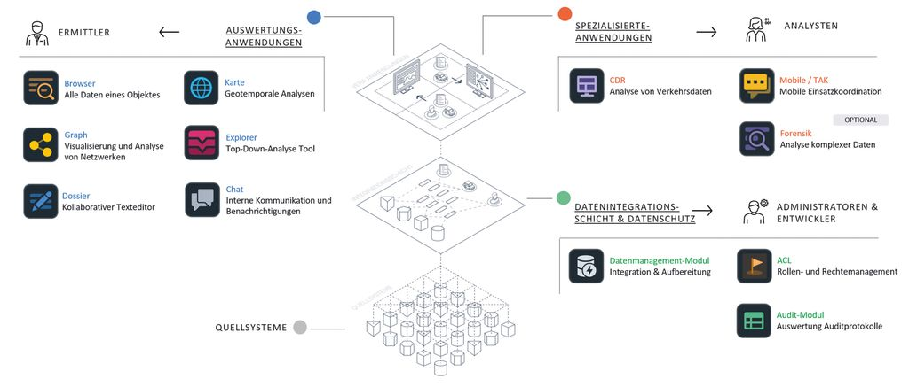
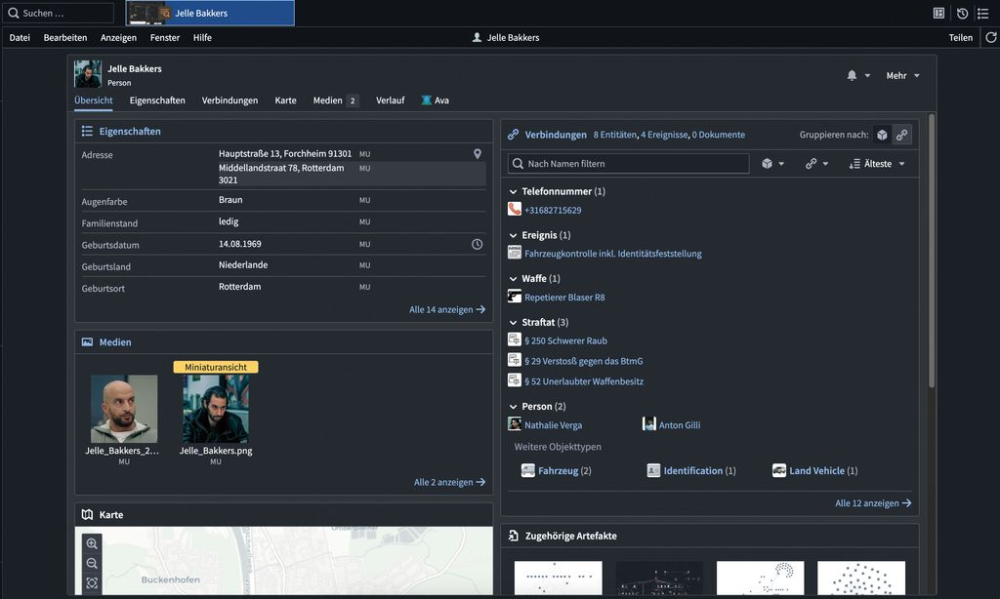
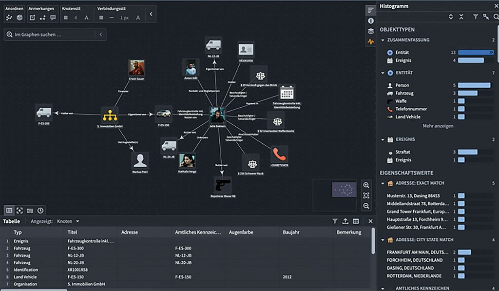
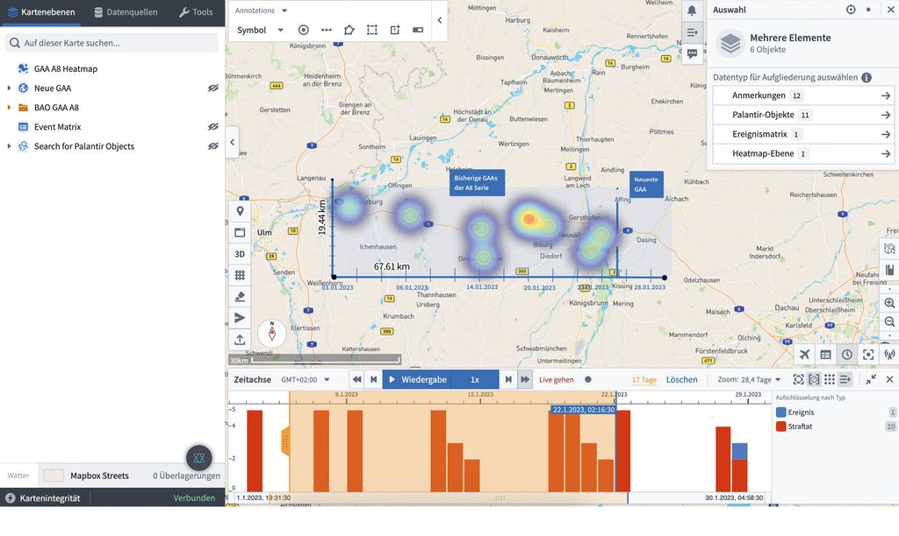

Palantir in BW
odervor der Revolte
vonStefan Leibfarth
im
Kulturhaus Mikado - 22.05.2026 in Karlsruhe
Rückblick
PolG-Verschärfungen in BW"Sicherheitsbehörden zeitgemäß ausstatten" 😱
- 2017: Präventivhaft, Aufenthaltsvorgaben und Kontaktverbote für sogenannte „Gefährder“, ...
- 2021: Staatstrojaner, Anlasslose Kontrollen bei Großveranstaltungen, Bodycams in Wohnungen
- 2025: Automatisierte Datenanalyse (Verrfahrensübergreifendes Recherche- und Analysesystem - "VeRA")
Was ist Gotham?
Was ist Gotham?

Quelle: Magazin DEUTSCHE POLIZEI der GdPWas ist Gotham?

Quelle: Magazin DEUTSCHE POLIZEI der GdP
Was ist Gotham?

Quelle: Magazin DEUTSCHE POLIZEI der GdP
Was ist Gotham?

Quelle: Magazin DEUTSCHE POLIZEI der GdP
Was ist Gotham?

Quelle: Magazin DEUTSCHE POLIZEI der GdP
Personen hinter Palantir

© Getty Images/Nordin Catic; Anadolu; Collage: Dominik Schmitt/Gründerszene
Einführung in BW
- 09/2024 Kabinett beschließt Sicherheitspaket
- 03/2025 Vertragsschluss mit Palantir
- 11/2025 Verabschiedung PolG im Landtag
- Q2/2026 Geplanter Start der Plattform
Kritik
- Forlaufende Auswertung Unbeteiligter
- Import von Internet-Daten
- Nutzung von "KI"
- Software nicht vertrauenswürdig
Realität in Hessen
Nicht nur Abwehr schwerer Gefahren

"In Hessen wird die Software von Palantir, die dort "Hessendata" heißt, bis zu 15.000 Mal im Jahr genutzt und ist inzwischen ein Kernstück der Ermittlungsarbeit, wie die Polizei bestätigt."
Quelle: tagesschau.deAusblick
Neuer Qualitionsvertrag in BW:
"Sicherheitsbehörden zeitgemäß ausstatten" 😱
- "spätestens [...] 2030 eine europäische Alternative zu Palantir"
- "Einsatz Künstlicher Intelligenz zur Auswertung digitaler Beweismittel intensivieren"
- "Intelligente Videoüberwachung: KI-Videoschutz"
- "Automatisierter Bildabgleich im Internet"
- Mehr "Präventivgewahrsam"
Fragen?
Diese Präsentation: t1p.de/TBD
Kontakt:
Signal: leibi.81